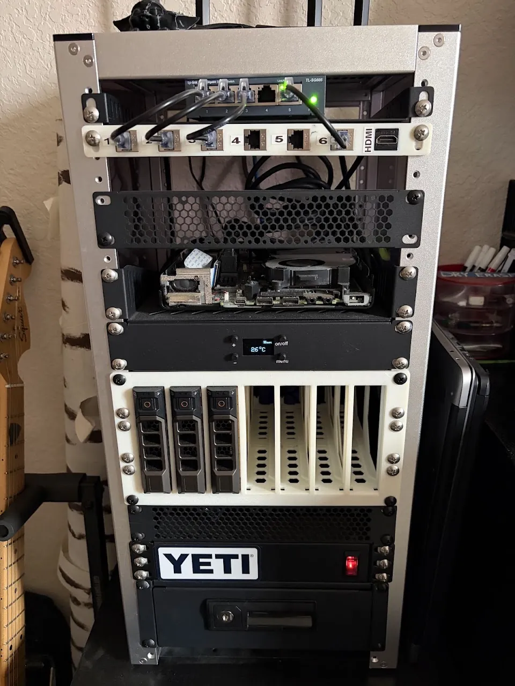

Hello, I’m Brady.
I completed my B.S. in Psychology at the University of Minnesota Twin Cities and now work as a Post-Baccalaureate Researcher in the Sensory Optimization & Neural Implant Coding Lab and the Center for Applied & Translational Sensory Science.
I am applying to PhD programs in hearing science and auditory neuroscience for Fall 2027.
How I got here
I didn't set out to study hearing. A first-year research scholarship after I transferred to UMN placed me as a research assistant in an EEG study of listening effort, and I've stayed involved in auditory research since.
When I get curious about something, I am generally the type of person to commit fully to it, and that has taken me to a lot of different work: phonotaxis experiments with treefrogs in Mark Bee’s lab, a reward-prediction study in Jean-Paul Noel’s lab, a review of 300+ behavioral health instruments for the Institute for Health Informatics, administering hearing screenings from a mobile van, and now experimenting on psychophysics and assisting with development of some testing modules for an auditory nerve implant.
Before fully committing to research, I spent over a year as a mental health advocate in supportive housing and intended on counseling for my professional career. Now, I still want my work to help people directly. What keeps me in hearing research is that the work we do can improve outcomes for cochlear implant users, people with hearing loss, and older adults dealing with cognitive decline.
Training & tools
- Psychophysics, EEG (BioSemi, EEGLAB), and pupillometry (Tobii Pro Spectrum)
- Audiometric threshold testing; stimulus verification with oscilloscope and Picoscope measurement
- Statistical modeling in R and MATLAB: GAMMs, linear mixed-effects, regression
- Human-subjects research under IRB, HIPAA, and GCP; animal research under IACUC protocols
Personal projects
Home server build
A 10-inch mini rack built around a retired 2017 HP EliteDesk mini PC from Free Geek Twin Cities. I took the cover off the PC and mounted onto a rack shelf, and I repurposed the small WLAN slot with adapter cards to add SATA ports for a bank of hot-swap hard drives. The drive cage and patch panel were 3D-printed at the College of Science and Engineering’s Anderson Student Innovation Labs (opens in new tab).

Hardware
- Compute: HP EliteDesk mini PC, removed from its case and shelf-mounted
- Storage: the Wi-Fi (A+E-key) slot is extended to an M-key NVMe connector, which feeds an ASM1166 M.2-to-SATA card (6 Gbps); drives sit in a 3D-printed 3U, seven-bay 3.5″ hot-swap cage (opens in new tab); three hard drives currently provide about 8 TB (10 TB total, with system storage) , with room for seven HDDs
- Networking: TP-Link TL-SG605 gigabit switch and a 3D-printed seven-port keystone patch panel (opens in new tab)
- Cooling: GeeekPi 1U four-fan unit with temperature display
- Power: ElecVoztile 1U PDU with eight outlets and surge protection
- Enclosure: GeeekPi DeskPi RackMate T2, a 12U 10-inch rack
Software
- Operating system: Ubuntu Server (Linux)
- Backups: storage for backing up my data, photos, documents, etc.
- Media: Jellyfin for streaming home media library
Outside the lab
I swam competitively at Gustavus Adolphus College, spend time outdoors, and am kept company by two cats. I also enjoy playing guitar. Some of my activities end up in the photo galleries.